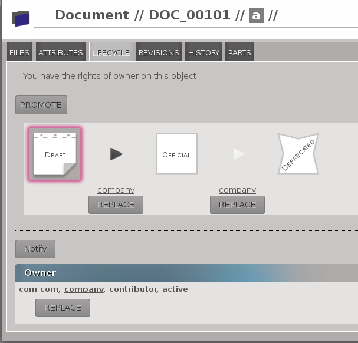

3.5.2.2.1. User changes
3.5.2.2.1.1. New files uploading
You can now upload your files and keep an eye on the list of your files.
Multiple files upload is available:
you can select more than one file to upload.
- Progress-bars appear while uploading files:
- one per files
- one for the total progress
Screenshots:
3.5.2.2.1.2. Browsing feature
A new feature is available to browse all parts, documents, groups and users.
For more details see Browse feature documentation
3.5.2.2.1.3. Lifecycle and management
The lifecycle and management pages have been merged into the lifecycle page.
Replacing a signer is now much more intuitive, see the screenshot:

3.5.2.2.1.4. Public pages
It is now possible to publish a part or a document. A published item is accessible to
anonymous users.
3.5.2.2.1.6. Timeline
The timeline is like a global history which contains:
- all history events related to official objects
- all history events related to objects owned by groups you are in
3.5.2.2.1.8. New application: oerp
If you use OpenERP , OpenPLM provides a new application to “push” your official
parts (and their BOM) into OpenERP.
3.5.2.2.1.9. Document3D
The document3D application has been improved.
3.5.2.2.1.9.1. 3D view enhancements
3.5.2.2.1.9.1.1. Highlighting
You can highlight a sub-assembly by moving your mouse over the sub-assembly name as show on
the screenshot below:
3.5.2.2.1.9.1.2. Shading
Now there are shades displayed for 3D view.
Screenshots before and now:
3.5.2.2.1.9.1.3. View selection
A new toolbar is available to switch between views (axometric, front, right, top, rear, left, bottom).
3.5.2.2.1.9.1.4. Random colors and transparency
You can switch between random colors or initial colors.
You can also toggle (enable/disable) the transparency and chose to display or hide axis.
3.5.2.2.1.9.2. STL
The 3D view can now display STL files (ASCII and binary formats).
3.5.2.2.1.9.3. STEP file thumnnails
OpenPLM can now generate a thumbnail of a STEP file. Currently, only
non decomposed STEP files are handled.
3.5.2.2.1.10. WebDAV access
OpenPLM can now serves all managed files through a WebDAV access.
3.5.2.2.1.11. Bugs fixed
Suggested reference for PLM objects
108 step management - Suggested part references are all the same
113 Part - Suggested reference may cause some problem
117 Object creation - If you update the page suggested reference and reference change
BOM
121 BOM - Display last level is not correct
Document3D
104 3D data not copied when a Document3D is revised
106 document3D: can not decompose a step file defining two products with the same name
File management
124 File check-in broken
Sponsorship
109 Sponsorship - Character ‘ is authorised for username and leads to a bug
Delegation
119 Delegation - We can delegate someone who is not in the same groupe as the object
3.5.2.2.1.12. Other enhancements
BOM
- download as PDF,
- replace child.
Navigate view
If the current object is a part you can:
- attach a new document,
- add a new part (child).
If the current object is a document you can:
Part and document
You can cancel and clone PLM objects.
Search panel
The research is performed asynchronously
Display enhancements
- groups tab
- revisions tab
- ...
Documentation
- More documented features
- disponible dans la langue de Molière
Thumbnails: new supported formats
SolidWorks, Catia, Sketch Up, Pro Engineer
3.5.2.2.2. Administrator changes
3.5.2.2.2.1. Restricted accounts and publishers
Restricted accounts represent a user with the restricted field set to true.
A user with restricted access can:
- neither be a contributor ( imply he(she) can’t create object or group, sponsor user) neither an administrator
- not be member of a group
A publisher is a user with the can_publish field set to true. He(she) can publish
all official PLM objects he(she) can read. A published object is accessible to everyone,
even anonymous users.
The restricted and can_publish fields can be set via the admin interface.
For more informations see Restricted access and Publication.
3.5.2.2.2.2. Applications layout
A big change has been made to the application layout. Optionnals applications
are now located in the apps folder.
Make sure that your settings.py file has been update in consequences:
with the exception of plmapp, openPLM applications are now named openPLM.apps.ApplicationName
Example:
'openPLM.plmapp',
'openPLM.apps.cad',
'openPLM.apps.cae',
'openPLM.apps.office',
3.5.2.2.2.3. New optional dependency
gsf (package libgsf-bin in Debian/Ubuntu) is now used to generate a thumnail from a SolidWorks file.
3.5.2.2.2.4. document3D
New optional dependency: povray
3.5.2.2.2.5. New application: oerp
This application depends on oerplib and require an update of your setting.py file, see oerp – OpenERP Application.